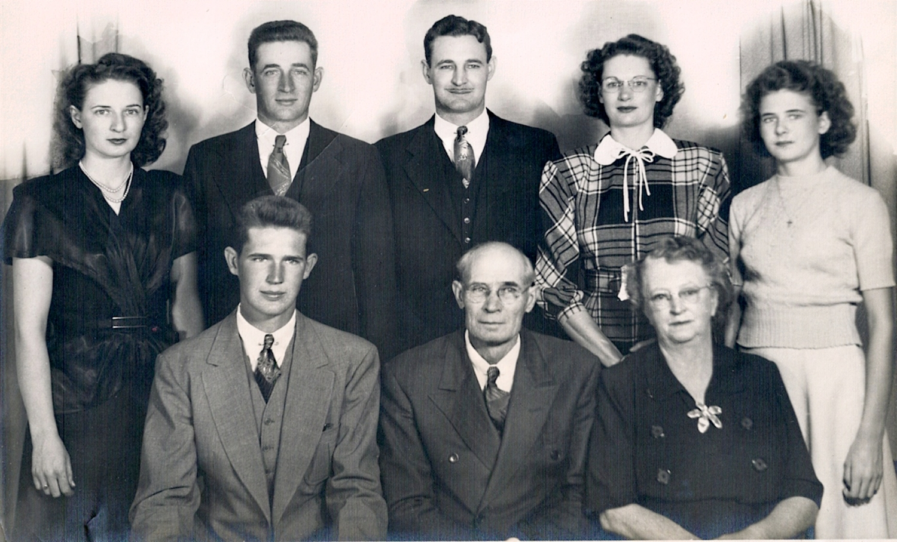

Back to Home Page
Clicking anywhere on the photo will take you to Vince and Maime's Story.
Click on the
RED
dot at the top left to close the window when finished.
Where will the
Red dot
be?
Up Here
